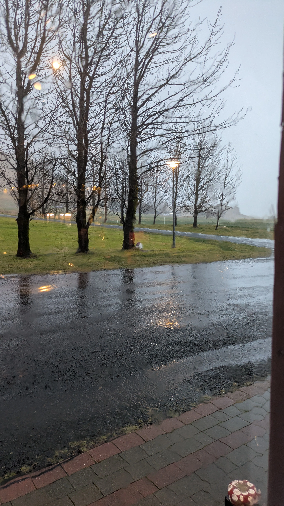

Rainy as fuck.

I've been playing a lot of games lately. The Kairosoft ones on my mobile and then I also decided to buy and download Dressmaker and One more lawn. Both are kinda awesome I think.
Both of them are kinda chill game, although Dressmaker has more complexity regarding gameplay. One more lawn is kinda the funny kind of game that you play with your friends and laugh together for like two days before jumping on another one.
Can't say I feel bad about not being productive. And I feel like I should? I havenẗ been doing any kind of work, wether is studying C or making work for my step-father or doing Project Oathbreaker stuff. It has helped me relief the stress a bit.
Right now I am sitting on a leather arm chair, looking outside and watching the darkness consume the outside world with only small lightbulb blimps shining around. It has been raining and getting windy all the time here.
But I did get to talk with my co-worker for like an hour and it was a nice chat. We both talked about struggling mentally, because, it turns out, she has been having problems as well. We both don't seem to know what we want to do, but we're happy that we got work and don't have to worry about job hunting.
I also helped her get torrented Star Wars movies on her computer, which was also kinda cool. She has internet troubles at her home and so she can't stream anything, so I decided to give her a helping hand. Felt really good about myself, she was very happy I helped her. Nice feeling.
Maybe we could do some shit together? Like go shopping, do some creative stuff or just meet and talk. I think we would appreciate it both, because there's simply no one else to talk to here.
Who knows what the future is going to bring...